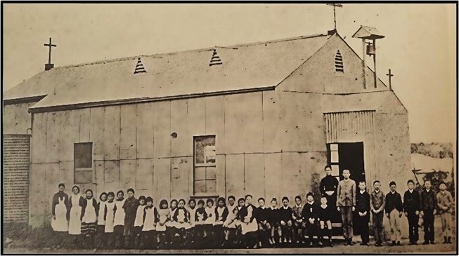
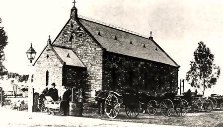
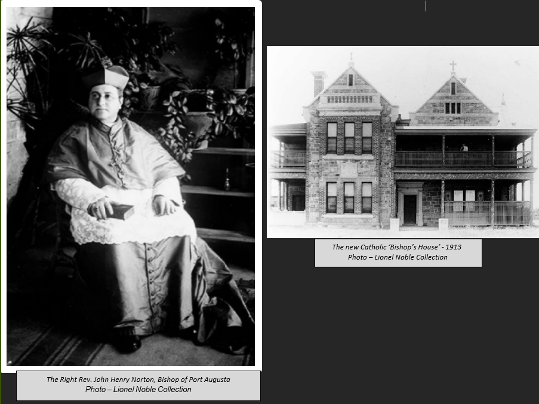
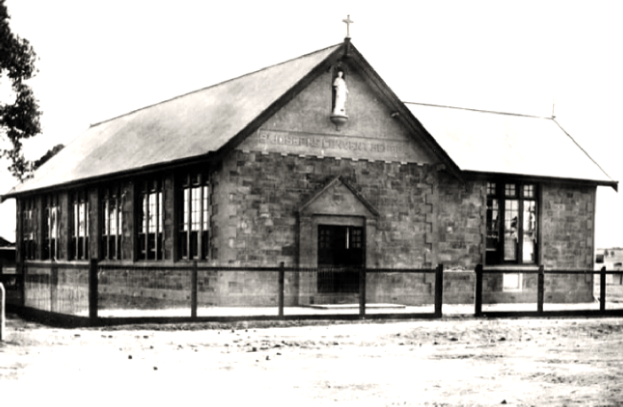

St Joseph’s Catholic School
Many of the new settlers in the district were Catholic and in 1878 Mr John McInerney donated two acres of land, three miles south-east of the proposed railway line and four miles east of Yongala to build a church. The Church of Saint Sabastian was established by the Rev. Father John Evangelist Pallhuber S J originally of Sevenhills and then of Tarcowie. A private school was also conducted in the church. The church picnics were held in the paddock next to the church.
The Rev. Father Bernard Nevin of Pekina held services at the church until 1881, when he was replaced by the Rev. Father James Mahar also of Pekina (future Bishop of Port Augusta). The Rev. Father Pallhuber S J, relocated to Jamestown in 1882 where he died in 1890 aged 68.
In November 1878, Bishop Reynolds, the Roman Catholic Bishop of Adelaide visited the church during his tour of the north. The Chapel School was consecrated by the Bishop in honour of Saint Sabastian the Martyr and he administered the sacrament of confirmation to twelve young people.
The Rev. Father John Norton was the first Catholic priest to live in Petersburg. Rev Norton arrived at Petersburg on 19th January 1884 and took over the services at the Church of Saint Sabastian. An old house was soon purchased, and the Rev Father Norton began holding regular mass in Petersburg.
The original Methodist Church, an iron building built in 1880 by Mr George Threadgold between the Main Street and Railway Terrace was sold to the Catholic Church and became the first Church of Anacletus.
The new Catholic Church was opened on Sunday 23rd November 1884. The ceremony of dedicating and blessing St Anacletus Catholic Church was conducted by His Lordship the Right Rev CA Reynolds, followed by Holy Mass by Father O’Brien. Under the direction of Father Norton several additions and alterations had been made to the building by Mr Jabez Wright. A sanctuary and sacristy have been added to the western gable, and a porch erected over the entrance. An alter chastely designed and decorated was erected, and the windows were of coloured glass. A bell was provided to summon the worshippers, and two crosses ornamented the gabbles.
The new Catholic School opened a few weeks later in December 1884 using the church as a classroom with Miss Teresa Ennis a provisional teacher. She was replaced by Miss Marie O’Loghlin in 1885 when she resumed her studies. By 1892 the number of students had risen, and an assistant Miss McGreavy was engaged to help.

Miss Marie O’Loghlin and students
Photo – Peterborough Library History Room
End of year concerts were held at the town hall, and regular fundraising events were held by parents to raise money for both the church and school. Examinations were held each year, and the school proudly displayed the children’s work with open displays.
The annual Catholic Picnic was held on Tuesday 1st November 1887 and despite the threat of rain over four hundred people attended the day. A hot north wind blew dust across Mr Cochrane’s paddock all day but this did not deter the attendance. Mass was celebrated at St Anacletus Catholic Church at 10:30am with the sports program starting at 12pm. A concert followed by a ball were held in the evening with about £100 raised for the Catholic Church building fund.
The annual Catholic picnic and sports were held annually on 1st January usually at either the Lancelot Lagoon or Hutton’s Lagoon and on All Saints Day in November at Petersburg.
A picnic was held on 25th August 1887 for the children of the district. The picnic was organised by the Catholic Church and was held near the Seven Mile Yard on the Silverton Line. This was possibly the future site of Amilia Park Picnic Ground.
Tenders were called for the building of a new Catholic church in 1890. The building was planned to be of a substantial character, and an ornament to the town. The foundation stone was to be laid at the end of the month by Bishop O’Reily. The church would be built in Railway Street alongside the priests’ residence on the south side of the town.
Although not completed, church services were held at the new Catholic Church for the first time on Christmas Day 1890. The formal opening of the church was not scheduled until a later date.
The formal opening of St Anacletus, the new Catholic Church was held on Sunday 11th September 1892. The blessing was performed by the Right Rev. Dr O’Reilly, Bishop of Port Augusta.

Petersburg St Anacletus Catholic Church
Photo – Lionel Noble Collection
On Saturday 30th July 1892 an exciting game of football was held between the Public-school boys and the Catholic-school boys. As no goals were scored the game resulted in a draw with the Public School, 5 behinds and the Catholic School, 2 behinds.
The thirteenth Catholic Picnic was held at the Petersburg Show Grounds on 28th October 1896.
Miss O’Loghlin, teacher at the Catholic School retired in 1896 after twelve years and the school was to be taken over by the Sisters of St. Joseph. She was presented with an address and album from the children of the school.
The Sisters of St Joseph began operating the Catholic school. Founder of the order, Mary McKillop, and four nuns (Sisters Benizi (sister in charge), Aloysuis, Clotide and Euphrasia) arrived on 16 January 1897 and were met at the station by Father Norton.
The pupils of the Petersburg Catholic School, conducted by the Sisters of St Joseph, gave a most successful concert in the Town Hall on Friday 1st October 1897.
A Commonwealth Fair was held in the Town Hall on 21st to 25th March 1902 by the Catholic Church. It was to raise funds to erect a new and more convenient Presbytery at Petersburg. The fair was a great success with about 400 persons having paid admission over the five days.
The ‘months mind’ requiem for the Roman Catholic Bishop of Port August, the Right Rev. Dr James Maher was held on Wednesday 24th January at St Anacletus Church. Dr Maher was Rev Father at the Church of Saint Sabastian between 1881 and 1884 until he was replaced by the Rev Father John Norton. Dr Maher died on 20th December 1905 at his home at Pekina after a painful illness aged 66.
The Very Rev. JH Norton (who had been Administer of the Diocese since the death of Dr Maher) received the documents of his appointment to the Bishopric of Port Augusta.

The Right Rev. John Henry Norton, Bishop of Port Augusta and The new Catholic ‘Bishop’s
Photo – Lionel Noble Collection
The Silver Jubilee of the St Joseph’s Catholic School was held in St Anacletus Hall on Wednesday 22nd December 1910.
The new residence for the Catholic Bishop of Port Augusta was formally opened and blessed by the Right Rev. Dr JH Norton. The building was an imposing two story stone structure, with 14 rooms and accessories. Stables and outhouses were erected with every convenience. A large underground tank had been constructed, with rotary pump to lift the water to the upper story. The residence was built near the St Anacletus Church. It also had its own electricity supply for lighting.
The Right Rev John Henry Norton, Bishop of Port Augusta, died on Thursday 22nd March 1923 after a long illness.
Although suffering a relapse from his recent illness, and the announcement on Wednesday evening that Dr. Norton, Bishop of Port Augusta, was very low, the sad news of his death on Thursday morning came as a great shock to the whole State, throughout which His Lordship was well known and beloved by all.
When Rev Norton arrived at Peterborough (Petersburg) on 19th January 1884, it was a small township of about 300 people. There was no Catholic institution in the town, and he was the priest at the Catholic Church of St Sebastian on land owned by Mr Mclnerney, three miles south-east of the town, between Peterborough and Yongala. The church purchased a small house and Rev Father Norton conducted services from there until the later part of 1884, when the old iron church formally used by the Peterborough Methodists was purchased. Under the direction of Rev Norton, who was a trained architect, several additions and alterations were made, and the building became the first St Anacletus Church. The Church was opened on Sunday 23rd November and was also used as a school, which opened in December 1884. In 1885 the foundation stone of the Dawson Church was laid by Bishop Reynolds, and Blessed by Father Norton January 1887, but formally opened by Bishop Reynolds in August of the same year. Monthly services were held in the Yongala Institute until the purchase of the old Methodist Church in 1904. The second Church of St Anacletus was built in 1890 and formally opened on Sunday 11th September 1892. The church was enlarged in 1916 and officially opened on 5th August 1917. The two-story Bishop’s residence which was designed by Rev Norton was completed in 1913.
The consecration of the new Bishop of Port Augusta, The Right Rev. Andrew Killian of Broken Hill was held at St Anacletus Catholic Church on Sunday 15th June 1924.
The foundation stone for a new Catholic school, which was to be built as a memorial for the late Bishop (The Right Rev Dr Norton) was blessed and laid by the present Bishop (The Rev Dr Andrew Killian) on Sunday 19th April 1925.
The new St Joseph’s Catholic School was opened on 24th January, by the Right Rev Dr Killian. The school was built as a memorial to the late Dr. John Henry Norton, Roman Catholic Bishop of Port Augusta. The school opened free of debt as the Catholics of the district were able to raise all the money for the school, furniture and accessories.

Dr Norton Memorial School- 1926
Photo – Lionel Noble Collection
Dr Killian also announced that the new bishop’s house would be blessed and opened on 2nd May and the present two story building handed over to the Sister’s of St Joseph, as a convent and a small boys’ boarding school.
The boarding school later became a girls boarding school in 1940 and additions to the school were built in 1957 as the enrolments totalled over 300.
In 1931 summer school was established for outback students. The students were accommodated in the convent and St Anacletus Hall. The summer school ran until the 1960’s although there were not held in the war years due to the scarcity of fuel.
The boarding school was closed in 1973 and the secondary sectrion of the school was closed in 1974.
The school was completely refurbished in 1988 and futher additions have benn added since.